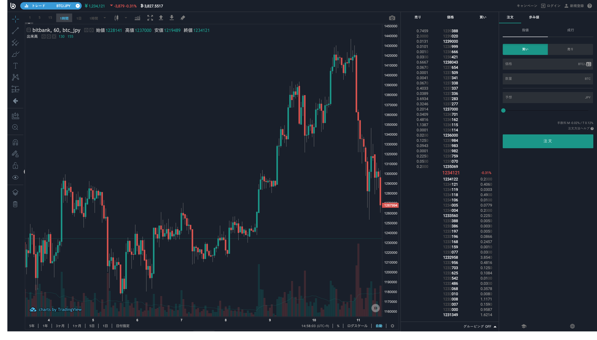

仮想通貨取引所 bitbank の IaC の導入と実践
2019/07/30 X-Tech JAWS @AWS
Who?
Shogo Ishikawa (@koarakko99)
Engineer @ Bitbank (2018/04-)
AWS Team
CI/CD
Account management
Fargate, EB
Favorite service
CloudFormation, VPC
Who?
Yuta Suzuki (@euxn23)

Engineer @ Bitbank (2018/07-)
Developer Success Team
DeveloperSuccess として何を届けられるか、様々な分野を経た先として何ができるか
AWS, DevOps, NodeJS Engineer
formerly, Application Engineer (Angular / TS Backend)
Using AWS half a year
awswakaran.tokyo co-founder (w/@potato4d)
bitbank とは
ビットバンクは、ビットコインなどを扱う仮想通貨取引所です
bitbank.cc は Angular + TypeScript + AWS です
bitbank における活用状況
ElasticBeanstalk を利用した CodePipeline
CloudFormation StackSets を利用したアカウント管理
GitLab Runner の構築
導入編
なぜ IaC を導入したのか？
リソースが何が起因作られたかわからなくなった
同じ環境を手作業で作るのがシンドかった
環境を何回も作り直したかった。
なぜ CloudFormation を採用したか？
AWS 以外のクラウドの利用予定がなかった
AWS ドキュメントに慣れていたため
悩みを AWS サポートに相談できるから
CloudFormation の習得するためにやったこと
AWS CloudFormation の公式ドキュメントを読んだ
GitHub で他人のコードを読んだ
Resource 名で検索するとヒットするのでそれを読んだ
特に習得しておくと便利なテクニック
疑似パラメータを積極的に使う。
なるべく nested しておき、汎用性を高める
最初手作業で作って、describe の結果を利用
疑似パラメータを積極的に使う。
アカウント ID => AWS::AccountId
リージョン => AWS::Region
スタック ID => AWS::StackId など
なるべく nested しておき、汎用性を高める
Resources:
IamRole:
Type: AWS::CloudFormation::Stack
Properties:
TemplateURL: ../../components/iam.yml
Parameters:
IamPolicy: !Ref IamPolicy
MyInstance:
Type: AWS::CloudFormation::Stack
Properties:
TemplateURL: ../../components/ec2.yml
Parameters:
SubnetId: !Ref SubnetId
ImageId: !Ref ImageId
InstanceType: !Ref InstanceType
InstanceName: MyInstance
KeyName: !Ref KeyName
IamRole: !GetAtt IamRole.Outputs.MyInstanceProfile
SecurityGroupId: !Ref SecurityGroupId
最初手作業で作って、describe の結果を利用
$ aws codepipeline get-pipeline
...
{
"pipeline": {
"name": "test",
"roleArn": "arn:aws:iam::xxxxxxxxxxxx:role/dev-test-codepipeline",
"artifactStore": {
"type": "S3",
"location": "testbucket"
},
"stages": [
{
"name": "Source",
"actions": [
{
"name": "App",
"actionTypeId": {
"category": "Source",
"owner": "AWS",
"provider": "CodeCommit",
"version": "1"
},
"runOrder": 1,
"configuration": {
"BranchName": "dev",
"RepositoryName": "testrepo"
},
"outputArtifacts": [
{
"name": "App"
}
],
"inputArtifacts": []
}
]
},
...
CLI の結果を転記する
Pipeline:
Type: AWS::CodePipeline::Pipeline
Properties:
Name: !Ref ApplicationName
RoleArn: !GetAtt CodePipelineServiceRole.Arn
ArtifactStore:
Type: S3
Location: testbucket
Stages:
- Name: Source
Actions:
- Name: App
ActionTypeId:
Category: Source
Owner: AWS
Version: 1
Provider: CodeCommit
Configuration:
RepositoryName: testrepo
BranchName: dev
OutputArtifacts:
- Name: App
RunOrder: 1
クロススタック参照は使わなかった
以下のような記述
Outputs:
WebSG:
Description: Service VPC
Value: !Ref ServiceVPC
Export:
Name: 'stack-service-vpc'
使わなかった理由
クロススタック参照の値を変更がしづらい
テスト時などで値を変えたい
ParameterStore を使うメリット
値の変換が簡単
一覧で見やすい
代わりに ParameterStore に値を入れた
SG の ARN を ParameterStore に格納
Resources:
InstanceSecurityGroup:
Type: AWS::EC2::SecurityGroup
Properties:
GroupDescription: test-sg
VpcId: !Ref VpcId
SecurityGroupEgress:
- IpProtocol: '-1'
CidrIp: 0.0.0.0/0
SecurityGroupIdParameter:
Type: AWS::SSM::Parameter
Properties:
Name: test-sg
Type: String
Value: !Ref InstanceSecurityGroup
取得時
AWSTemplateFormatVersion: '2010-09-09'
Description: Main template.
Parameters:
SecurityGroupId:
Type: AWS::SSM::Parameter::Value<String<AWS::EC2::SecurityGroup::Id>>
Default: test-sg
そのほか、CloudFormation で苦労したところ
サービスの制約
文字数制限
IAM 権限の不足
権限を厳密に書きすぎて、必要な権限が足りない
全部が対応している訳ではない。
導入編 まとめ
- CloudFormation は最初にドキュメントを読んで全体をつかんだ方がよい
- 実際に作るときは、AWS CLI を使うことで簡単に Resource の値を入れられる
実践編
Q. CloudFormation の実行、どうしてますか？
A. make？
- make は冪等性担保と相性が良い
- make は複雑な引数処理ができる
- make は使い回しができる
＿人人人人人＿
＞ できる ＜
￣ Y^Y^Y^Y ￣
(簡単とは言っていない)
Q. make では too much なケースでは？
A. npm script
bitbank は JS が社内標準語なので
package.json(npm run) で一部管理しています
(CDK が npm ecosystem なので、今後 AWS 系のエンジニアにも npm は普及するはず)
メリット
何をやっているかわかりやすくするため
IaC は読むためにあるので、読みやすさは大事
コマンドのオペミスを減らすため
IaC コマンドを手順書からコピー&ペーストしているとそのうち絶対にミスするので
例
GitLab CI Runner の構築
フロントエンド検証環境の構築
なぜ CFn の簡易コマンド化が必要か
デプロイ対象や検証環境ごとに権限対象が異なる
デプロイ対象や検証環境が増えるたびに環境を作成する
AWS 担当以外の開発者も CFn を触れることで開発を高速化できる
Q. CloudFormation にないところはどう実行するか
A. SDK を使って冪等っぽくなるようにたたく
具体例
Fargate の環境変数の ValueFrom (ParameterStore からの取得は)
長らく CFn では記述できなかった
現在は実装済み
TaskDefinitions を更新するたびに ただの環境変数に戻ってしまう
デプロイの都度、主導で直すのは手間だし、忘れる
SDK で解決 (冪等になります)
const taskDefinitionFamilies = await ecs.listTaskDefinitionFamilies({ status: 'ACTIVE' }).promise();
if (!taskDefinitionFamilies.families) {
throw new Error('listTaskDefinitionFamilies failed');
}
for (const family of taskDefinitionFamilies.families) {
console.log(`${family} task definition update start`);
const { taskDefinition } = await ecs.describeTaskDefinition({ taskDefinition: family }).promise();
if (!taskDefinition || !taskDefinition.containerDefinitions) {
throw new Error('describeTaskDefinition failed');
}
const { containerDefinitions, executionRoleArn, cpu, memory, taskRoleArn, requiresCompatibilities, networkMode } = taskDefinition;
const requestContainerDefinitions = containerDefinitions.map((def) => ({
...def,
secrets: [
...(def.secrets || []),
...def
.environment!.filter((env) => envToSecretKeys.includes(env.name!))
.map((env) => ({
name: env.name!,
valueFrom: env.value!,
})),
],
environment: def.environment!.filter((env) => !envToSecretKeys.includes(env.name!)),
}));
Q. CFn の parameter-overrides って実行時エラー出したくない
A. 型安全になるように TypeScript の template から注入する
(quicktype.js を使いました)
config.template.yml.ts
import { Convert, Env } from './env.quicktype';
export function prepare(env: string = 'default'): Env {
const envJson = JSON.stringify(require(`./.env.${env}`));
return Convert.toEnv(envJson);
}
// language=yaml
export default ({ envName, nodeEnv, awsAccountId, defaultCpu, defaultMemoryMb }: Env) => `\
all:
Application: app
SSMKeyPrefix: /${envName}/
...
env.quicktype.ts
export interface Env {
envName: string;
nodeEnv: string;
awsAccountId: string;
defaultCpu: string;
defaultMemoryMb: string;
}
env.develop.ts
import { Env } from './env.quicktype';
const env: Env = {
envName: 'app-dev',
nodeEnv: 'develop',
awsAccountId: '123456789012',
defaultCpu: '256',
defaultMemoryMb: '512'
};
module.exports = env;
materialize-template.ts
import * as fs from 'fs';
import { resolve } from 'path';
import main, { prepare } from './config.template.yml';
const env = process.env.ENV;
if (!env) {
throw new Error('$ENV is required');
}
fs.writeFileSync(resolve(__dirname, `config.${env}.yml`), main(prepare(env)));
アプリケーション指向の解決方法を実践
。o (モノによっては aws-sdk (node) の型定義がそのままうまく使えるかも？)
実践編まとめ
CloudFormation は使うとき/読むときのことを考える
CloudFormation の限界は SDK を使って超える
アプリケーション的なアプローチでより効率的かつ安全にする
今後の展望
CloudFormation の社内普及を進めたい
CloudFormation のノウハウを言語化して共有したい
CDK の導入によりアプリケーションエンジニアでも触りやすくしたい